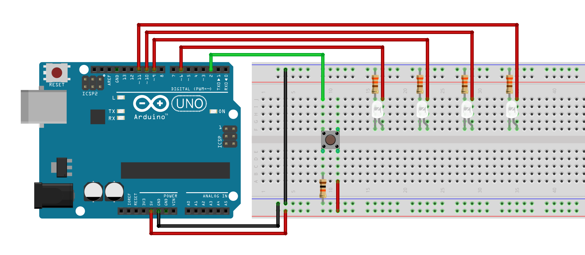
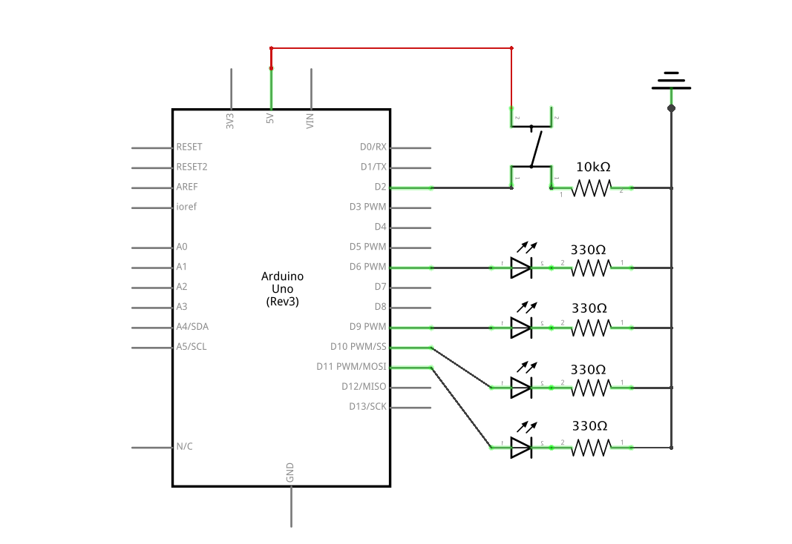

Timothy's Assignment 2!

Hardware
- Arduino Uno
- 4 white LEDs
- 4 330 ohm resistors
- 10k ohm resistor
- Momentary button
- Hook-up wires
- Breadboard
Circuit
Schematic
Code
/*
A2: Lights that Fade!
Timothy Sun
Adapted from Arduino built-in examples: For Loop Iteration, Fade, and Button.
Four white LEDs are on. When the buttonis pressed, they begin to flash.
*/
// constants won't change. Set pin number.
const int buttonPin = 2; // the number of the pushbutton pin
// variables will change:
int buttonState = 0; // variable for reading the pushbutton status
int brightness = 0; // how bright the LED is
int fadeAmount = 5; // how many points to fade the LED by
void setup() {
// use a for loop to initialize each pin as an output:
for (int thisPin = 6; thisPin < 12; thisPin++) {
// initialize thisPin as an output.
pinMode(thisPin, OUTPUT);
}
// initialize the pushbutton .pin as an input:
pinMode(buttonPin, INPUT);
}
void loop() {
// read the state of the pushbutton value:
buttonState = digitalRead(buttonPin);
// check if the pushbutton is pressed. If it is, the buttonState is HIGH:
if (buttonState == HIGH) {
// use a for loop to turn each LED on:
for (int thisPin = 6; thisPin < 12; thisPin++) {
// turn LED on:
digitalWrite(thisPin, HIGH);
}
// use a for loop to set brightness of thisPin:
for (int thisPin = 6; thisPin < 12; thisPin++) {
// set the brightness of thisPin:
analogWrite(thisPin, brightness);
}
// change the brightness for next time through the loop:
brightness = brightness + fadeAmount;
// reverse the direction of the fading at the ends of the fade:
if (brightness <= 0 || brightness >= 255) {
// reverse direction of fading:
fadeAmount = -fadeAmount;
}
// wait for 7 milliseconds to see the dimming effect
delay(7);
}
// buttonState is LOW:
else {
// use a for loop to turn each LED off:
for (int thisPin = 6; thisPin < 12; thisPin++) {
// turn LED off:
digitalWrite(thisPin, HIGH);
}
}
}